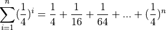

Geometric Distribution#
TODO
Geometric Random Variable#
Definition#
TODO
Geometric Conditions#
TODO
TODO
Parameters#
A Geometric Random Variable has single parameter.
Geometric Distribution#
TODO
Probability Density Function#
TODO

TODO .. _geometric_cdf:
Cumulative Distribution Function#
TODO
In order to show the geometric density represents a distribution, we must show the probability of all outcomes sums to 1. In order to do this, we must first talk about the geometric series.
Geometric Series#
A geometric series is defined as the sum of powers of r,

The reason it is called geometric can be easily seen if we give r a value. For instance, if  , then the first few terms of the geometric series are given by,
, then the first few terms of the geometric series are given by,

Each term on the right hand side can be identified with the areas of successive squares in the following picture,